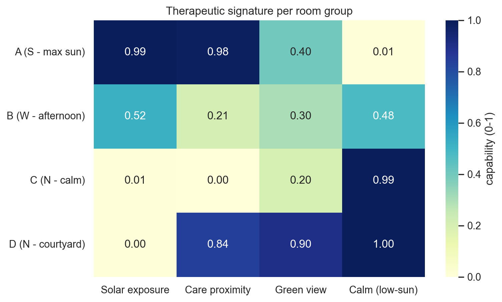
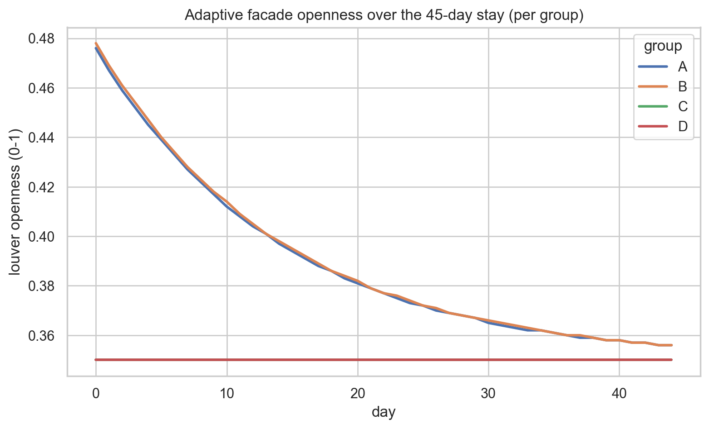
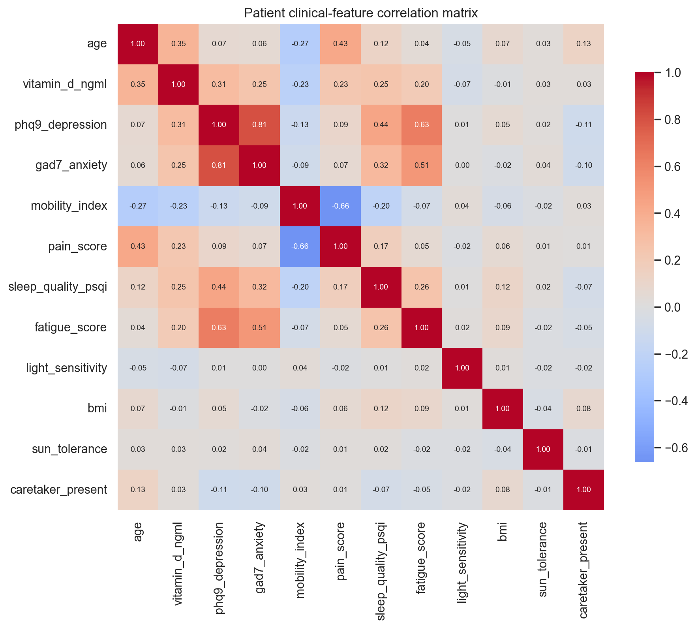
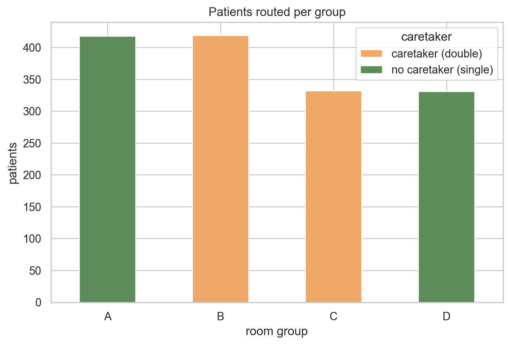
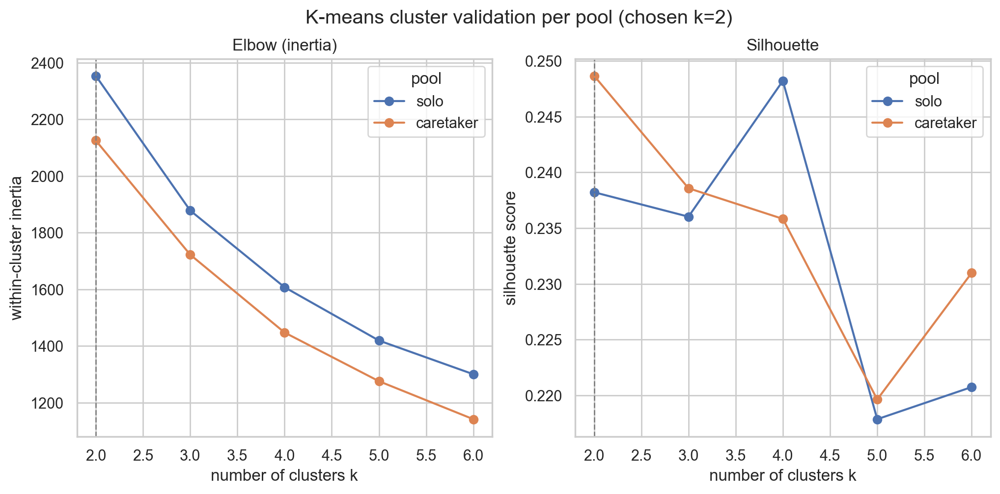
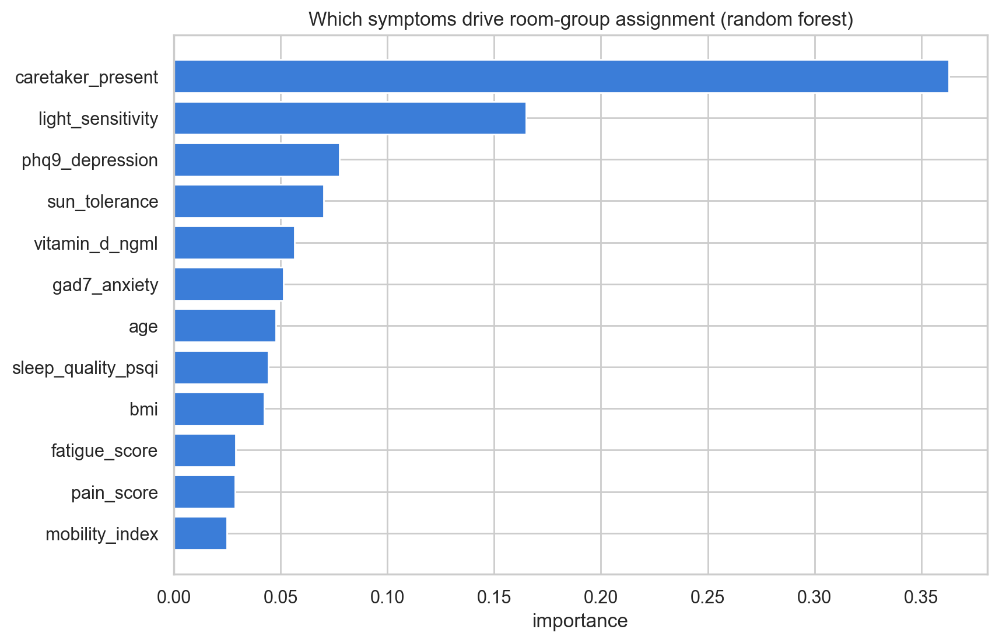
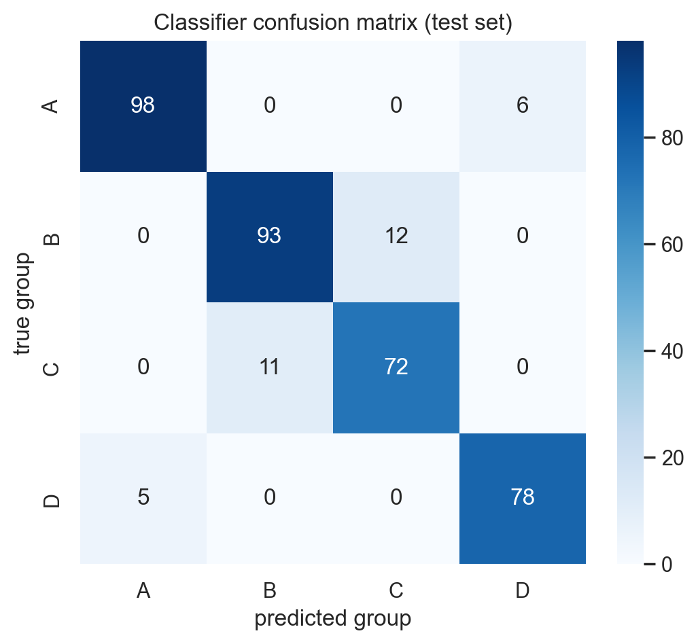
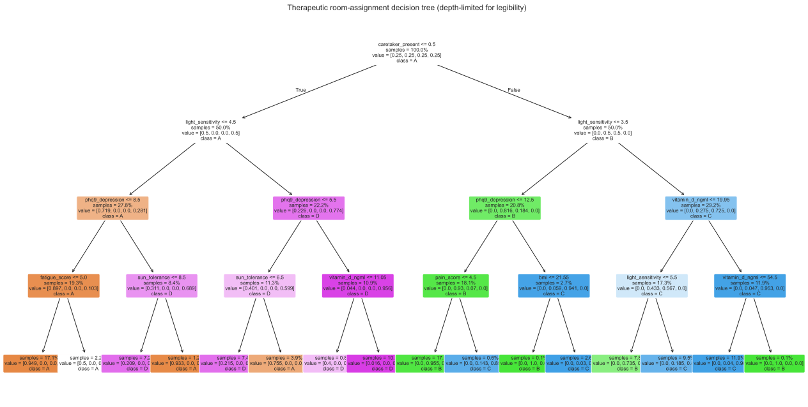
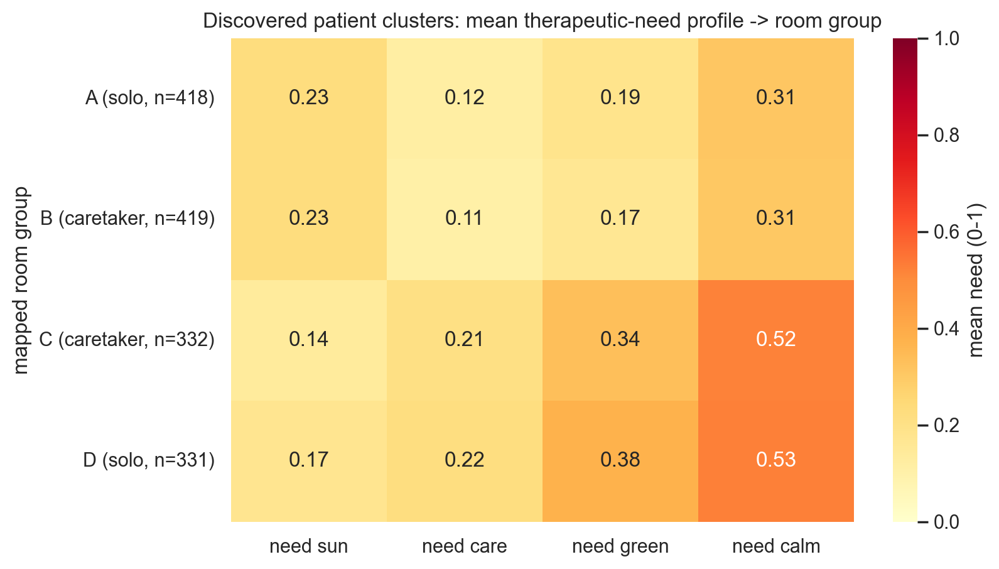
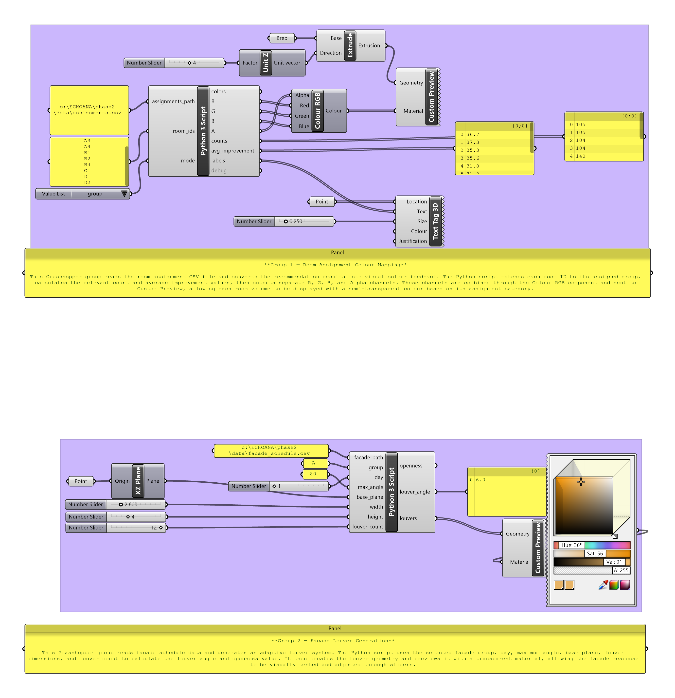

Find the room that helps you heal.
Answer a few quick questions. Our machine-learning model matches you to the room whose light, view and calm best support your recovery — and lights it up in the model.
- A · South · max sun
- B · West · afternoon sun
- C · North · calm light
- D · Courtyard · garden
Project Objective
ECHOANA is a wellness-recovery residence designed for patients well enough not to require hospitalization, yet needing tailored environments to heal. The spatial assignment of patients to rooms is traditionally arbitrary. This project introduces an ML-driven spatial matching pipeline that assigns each patient to the room group that best supports their recovery based on physical and mental assessments.
In addition, the exterior louvers of the building facade are controlled by a recovery regressor. As patients heal over a 45-day stay, the facade adapts dynamically to optimize sunlight exposure and biological needs, gradually stabilizing to a comfort baseline.
Predictive Target Summary
- Recommended Room Group: Optimal therapeutic signature matches (A, B, C, or D).
- 45-Day Recovery Trajectory: Predicts patient physical/mental health improvements.
- Adaptive Facade Louver Angle: Direct drives of exterior louvers over the stay.

Figure 1: Heatmap showing the therapeutic signatures and capability profiles calculated for each of the 4 room groups (Solar, Care, Green view, Calmness).
Grasshopper Model & Facade Logic
The building footprint consists of 10 rooms oriented around a central courtyard. The architectural layout divides the rooms into four distinct therapeutic groups based on glazing directions, daylight access, garden views, and proximity to care rooms:
| Group | Room Count & Type | Orientation | Therapeutic Signature & Design Strategy |
|---|---|---|---|
| Group A | 4 Single Rooms | South | Maximum all-day sun, nearest exam suite. Best for low vitamin D and high care needs. |
| Group B | 3 Double Rooms | West | Strong afternoon sun. Designed for sun-seeking patients staying with a caretaker. |
| Group C | 1 Double Room | North | Soft, calm diffuse daylight. Best for light-sensitive patients with a caretaker. |
| Group D | 2 Single Rooms | North / Courtyard | Courtyard garden views, near care. Best for flat mood/depression where biophilic view beats direct sun. |
Dynamic Louver Openness Control
In South (Group A) and West (Group B) rooms, the louvers are motorized and driven by the patient's recovery data. Louver openness ($\theta$) ranges from 0.35 (comfort baseline) to 1.0 (fully open).
For patients with severe Vitamin D deficiency, the facade starts wide open (up to 0.78) to maximize UV exposure, then gradually closes to the 0.35 comfort baseline as the predicted recovery curve normalizes. In contrast, North and Courtyard rooms (Groups C and D) maintain a steady 0.35 daylight baseline as they do not receive direct glare.

Figure 2: Adaptive facade openness schedule over a 45-day stay. Group A/B curves ease off as patients heal; C/D curves hold a daylight baseline.
Defining the Variables
The patient dataset contains 12 clinical intake features (grounded in the US CDC NHANES 2017-2018 survey) and 3 target variables. Provenance metadata is strictly preserved and printed below to guarantee project authenticity.
| Variable Name | Type | Clinical Instrument / NHANES Provenance | Valid Range | Description |
|---|---|---|---|---|
age |
Feature (X1) | Real NHANES (DEMO_J.RIDAGEYR) | 18 – 90 yrs | Age of the patient. |
vitamin_d_ngml |
Feature (X2) | Real NHANES (VID_J.LBXVIDMS) | 5 – 60 ng/mL | Serum Vitamin D levels. Deficiency is <20. |
phq9_depression |
Feature (X3) | Real NHANES (DPQ_J DPQ010-090 summed) | 0 – 27 | PHQ-9 Depression scale. Severe is ≥20. |
gad7_anxiety |
Feature (X4) | Modelled from real PHQ-9 comorbid data | 0 – 21 | GAD-7 Anxiety score. |
mobility_index |
Feature (X5) | Proxy derived from NHANES difficulty items | 10 – 100 | Barthel-like physical function scale. Lower is worse. |
pain_score |
Feature (X6) | Modelled from real mobility difficulty + age | 0 – 10 | Visual Pain Score (NRS). |
sleep_quality_psqi |
Feature (X7) | Proxy derived from NHANES sleep items | 0 – 21 | Sleep quality index (PSQI). Higher is worse sleep. |
fatigue_score |
Feature (X8) | Real NHANES energy item (DPQ050 scaled) | 0 – 10 | Felt fatigue/exhaustion score. |
light_sensitivity |
Feature (X9) | Modelled (sunlight discomfort scale) | 0 – 10 | Photophobia level. Higher is more light sensitive. |
bmi |
Feature (X10) | Real NHANES (BMX_J.BMXBMI) | 15 – 45 | Body Mass Index. |
sun_tolerance |
Feature (X11) | Modelled (sun exposure duration scale) | 0 – 10 | Ability to tolerate bright sun. |
caretaker_present |
Feature (X12) | Proxy derived from NHANES cohabitation code | 0 or 1 | Flag indicating if spouse/caretaker resides with patient. |
group_code |
Target (Y1) | Discovered via Stratified K-Means | A, B, C, D | Assigned Room Group (0=A, 1=B, 2=C, 3=D). |
predicted_improvement |
Target (Y2) | GradientBoosting Regression | 0 – 100 | Predicted 45-day clinical improvement score. |
openness_schedule |
Target (Y3) | Dynamic mathematical schedule | 0.35 – 1.0 | 45-day array of daily facade openness values. |
Data Processing & Exploratory Analysis
1. Data Cleansing
Raw NHANES data contained missing items (especially in sleep, mobility, and vitamin D). We validated clinical ranges, filtered outliers, and performed median-imputation on 834 missing/voided data points across 1500 patient rows.
2. Data Transformation
All categorical status variables (such as marital status in cohabitation proxies) were mapped into numeric columns. Model inputs were scaled and clinical scales bounded correctly to maximize ML convergence speeds.
3. Data Integration
Integrated features by computing 4 therapeutic-need scores mapping symptoms directly to spatial capabilities: need_sun, need_care, need_green, and need_calm.

Figure 3: Correlation Matrix of patient features. Displays expected medical comorbidities (e.g., PHQ-9 depression vs PSQI sleep quality / GAD-7 anxiety).

Figure 4: Stacked bar chart showing assignments across the 4 room groups. The stratified split maintains the solo-single and caretaker-double constraints.
The Machine Learning Architecture
A two-stage ML pipeline runs in Python: unsupervised discovery determines natural patient profiles, and supervised classification generalizes the rules for new admissions.
K-Means Clustering
Discovers patient needs profiles from the 4 derived scores. Clustering is stratified by caretaker presence to strictly enforce architectural occupancy limits. Silhouette validation justifies $k=2$ per pool (2+2 = 4 room groups).
Random Forest Classifier
Trained on discovered clusters to classify incoming walk-in patients instantly from the 12 features. Reaches 90.9% testing accuracy and 0.908 Macro-F1 score.
Explainable Decision Tree
A depth-limited decision tree is transpiled directly to JS to execute client-side. The tree makes splits based on caretaker status, light sensitivity, and vitamin D, rendering the AI matches fully transparent.
Recovery Regressor
Predicts 45-day patient clinical improvement ($R^2 = 0.841$) and controls the adaptive facade scheduling based on recovery speeds.

Figure 5: Elbow (inertia) and Silhouette metrics per caretaker pool, justifying $k=2$ clusters per group.

Figure 6: Global feature importance, showing caretaker status and light sensitivity as primary room assignment drivers.

Figure 7: Confusion matrix verifying model fidelity to the discovered room-group clusters.
Explainable AI Flowchart (Decision Tree splits)

Figure 8: High-resolution SVG of the decision tree model transpiled to run in this browser. You can trace the exact logic splits.
Rhino / Grasshopper Live Connection
Three GhPython components close the loop between Grasshopper and the ML pipeline. Standard library Python is utilized so no pandas/scikit-learn is required inside Rhino/Grasshopper. Script code works in IronPython 2.7 (Rhino 6/7) and CPython 3 (Rhino 8).
1. gh_export_rooms.py
Frees Ladybug solar and daylight analysis data to a structured rooms.csv file for pipeline processing.
2. gh_read_assignments.py
Loads assignments.csv, colors Grasshopper room zones dynamically (Group A gold, B orange, C blue, D green), and displays clinical statistics on text tags in Rhino space.
3. gh_drive_facade.py
Loads facade_schedule.csv and drives parametric facade geometries (louvers) using predicted daily openness parameters ($\theta$). Scrubbing the day slider animates facade breathing.
# GhPython facade driver excerpt
import os
def read_schedule(csv_path):
if not os.path.exists(csv_path):
return None
sched = {}
with open(csv_path, 'r') as f:
headers = f.readline().strip().split(',')
for h in headers:
sched[h] = []
for line in f:
vals = line.strip().split(',')
for i, val in enumerate(vals):
sched[headers[i]].append(float(val))
return sched
# Read row and rotate facade louvers
s = read_schedule(facade_path)
if s and group in ['A', 'B', 'C', 'D']:
openness = s['openness_' + group][day]
# Louver angle: 0 means open, max_angle means closed
louver_angle = (1.0 - openness) * max_angle
print("Group %s openness: %.3f" % (group, openness))ECHOANA — ML-Driven Therapeutic Residence
Unsupervised Discovery and Supervised Generalisation in Architectural Room Assignment
1. Introduction & Objectives
Healing residences often assign patients to rooms randomly. However, factors like solar irradiation, biophilic views, and proximity to nurse suites directly affect mental and physical recovery. This project presents a machine-learning room matching and facade control system to optimize clinical outcomes.
1500
Cleaned Patients (NHANES)4
Therapeutic Clusters Discovered2. Parametric Design & Facade
Ten recovery rooms are distributed around a central courtyard. Rooms have fixed architectural parameters (glazing widths, orientations, views):
- South (A): Max sun, closest to care. (Singles)
- West (B): Strong afternoon sun. (Doubles)
- North (C): Calming diffuse light. (Double)
- Courtyard (D): Direct garden views. (Singles)
South and West room louvers adapt over a 45-day recovery stay, starting wide open for vitamin D deficient patients and closing as health indicators normalize.
3. Patients Cohort (NHANES)
Data was gathered from the US CDC NHANES 2017-2018 database (Age, BMI, Vitamin D, PHQ-9 Depression, Fatigue, sleep, and mobility indicators). 8 out of 12 clinical columns are grounded in real measurements. Deficient patients were screened, cleansed, and integrated into need profiles.
4. Stratified K-Means Discovery
To respect single vs. double occupancy limitations, K-means clustering is stratified by caretaker presence:
• Solo patients: $k=2$ -> mapped to Single Room groups {A, D}
• Caretaker patients: $k=2$ -> mapped to Double Room groups {B, C}

5. RandomForest Classification
To classify new patients instantly without running K-means, we trained a Random Forest model. It achieves 90.9% testing accuracy. Feature importance confirms caretaker presence and light sensitivity drive the assignment.
6. Grasshopper Custom Node & Close Loop
Trained .joblib models are exported and read inside Rhino/Grasshopper via GhPython nodes. Louver rotations and room colors respond dynamically, verifying a closed-loop parametric design cycle.
Resource Hub & Download Center
Access all deliverables and scripts required for the final evaluation, including the training datasets, Grasshopper nodes, ML models, and the walkthrough video.
Facade Animation Showcase
This video demonstrates the dynamic adaptation of the parametric facade louvers over the course of a patient's 45-day recovery stay.
Deliverables List
Complete Project Bundle (.zip)
Contains HTML/JS website source code, datasets, diagrams, and Python scripts.
Cleaned Patient Dataset (patients_clean.csv)
1,500 patient records extracted from NHANES 2017-2018 with calculated need indicators.
Physical Rooms Dataset (rooms.csv)
Defines geometry widths, orientations, and daylight proxies for the 10 rooms.
Grasshopper Custom Nodes Python Scripts
GhPython scripts to read assignments and animate facade louvers inside Rhino.
Trained Random Forest Classifier (.joblib)
The trained classifier model used to recommend room assignments.
Grasshopper Definition Preview
The custom GhPython node clusters: Group 1 maps room-assignment colours from the recommendation results, and Group 2 generates the parametric facade louvers. Click to enlarge.
